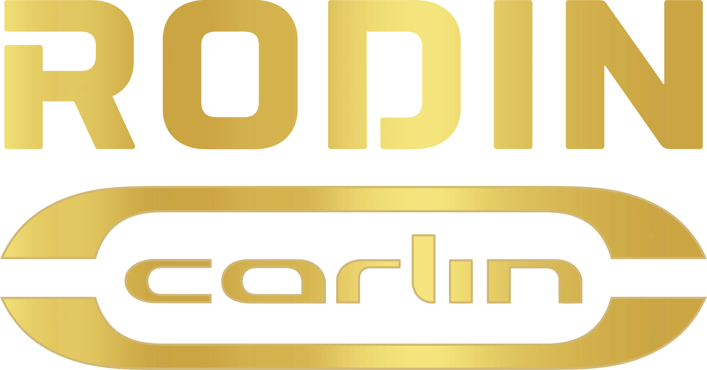

Rodin Carlin
Zane Maloney - Es un piloto de automovilismo barbadense. Ganó el Campeonato de F4
Británica en 2019 y fue subcampeón del Campeonato de Fórmula 3 de la FIA en 2022 en su
primer año con Trident.
Pilota con el número
5.
| País de procedencia | Barbados |
| Fecha de nacimiento | 02/10/2003 |

Ritomo Miyata - Es un piloto de automovilismo japonés. Fue bicampeón de la Fórmula
4 Japonesa en 2016 y 2017, campeón de la Super Fórmula Lights en 2020 y dos veces
subcampeón de dicha categoría cuando se denominaba Fórmula 3 Japonesa en 2018 y 2019.1​
Desde 2020 compite en la Super Fórmula Japonesa, resultando campeón en 2023
Pilota con
el número 6.
| País de procedencia | Japón |
| Fecha de nacimiento | 10/08/1999 |